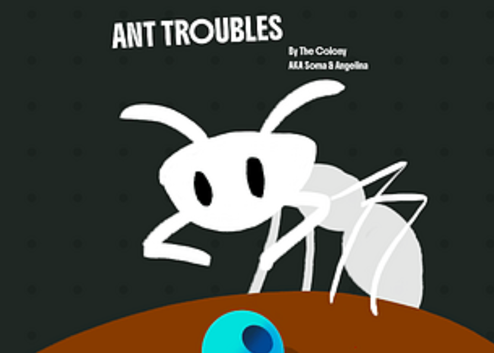

Angelina Novruzova

About
Cute co-op game where you and your friend play as adorable witch cats to make potions on time! This project originally began as a game jam entry, where we won the award for Best Gameplay Mechanics. It has since grown into a personal project that I am continuing to develop with my team.

About
Curious Cases is a series of training games focused on developing core skills such as instrument handling, depth perception, and orientation through playful challenges.

About
Shadows of Singraven is a horror experience where you play as the last Dutch witch hunter, called to investigate a haunted manor and its terrifying ghost nun.

About
Code: Rose is a chilling mystery set around a murder in a quiet church, with strange clues and a shadowy figure dressed in 19th-century clothing.

About
Stolen Worlds is a personal research project exploring souls-like quest and map methodology.

About
Ant Troubles is a simple, minimalistic game created for a game jam, where the player controls an ant trying to bring food back home.


About Me
Hi! I'm Angelina Novruzova, a Game Designer based in the Netherlands. I have experience in level, puzzle, and narrative design, with I’ve worked on a range of group projects to create fun, distinctive games, while also developing my skills through solo work. I have experience in leading teams, collaborating closely with designers and artists to create engaging and polished gameplay. My work spans both entertainment games and serious games. I’m available for new opportunities and open to relocation.
My Side Quests
Writing stories is a part of my life and my soul. In my free time, I’m a Dungeon Master, and my friends and I have been playing our campaign together for over four years! I also write one-shots for newcomers who want to try D&D but aren’t sure where to start. For my games, I mostly draw maps and worlds or make them physically.
Technical Skills
Unreal Engine
ArcWeave and Twine
Creative writing
Game Design & Balancing
Exel and Microsoft Office Products
Contact Me
angelina.novruzova@protonmail.com
Enschede, NL
0631623106079